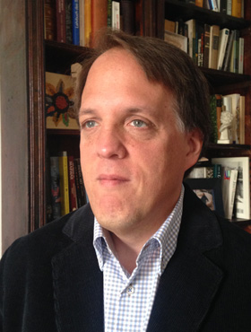
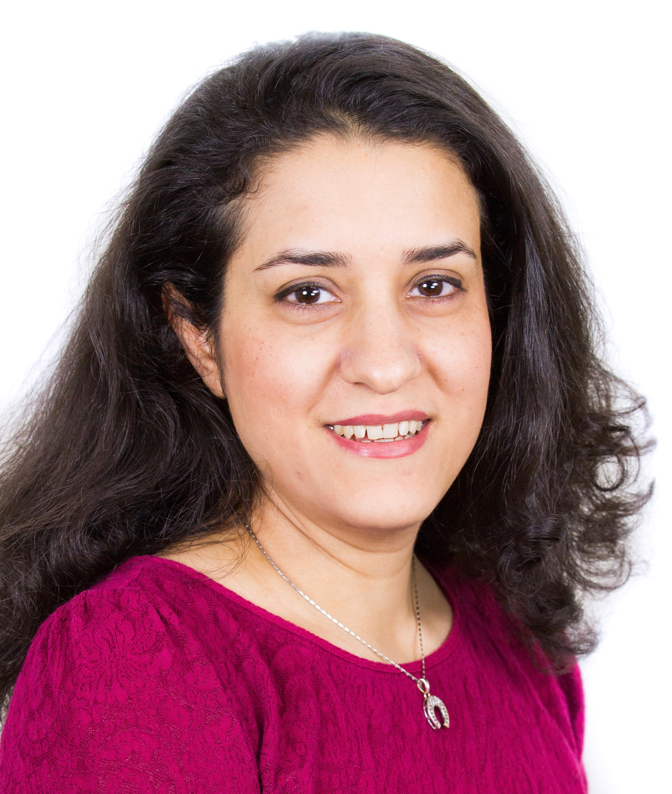

People
Peter N. Robinson, MD
We are living in a time of unparalleled opportunity to extend our understanding of human disease and improve the care of patients with precision genomic medicine. Sophisticated bioinformatics and computational biology are essential to achieve the full potential of genomics for science as well as for patients. Peter Robinson, Professor and Donald A. Roux Chair, Genomics and Computational Biology, leads a research group dedicated to the development of algorithms and computational resources for genomics. Highlights of the lab’s work include the Human Phenotype Ontology, the Exomiser suite of tools for exome and genome analysis, and algorithms for ChIP-seq and immunogenomics. Peter studied Mathematics (Bachelor) at Columbia College, Medicine at the University of Pennsylvania, and Computer Science (Master's) at Columbia University. He completed an internship in Primary Care Internal Medicine at Yale University, and a residency (Facharzt) in Pediatrics and obtained a Habilitation (roughly equivalent to a PhD) in Human Genetics at the Charité - Universitätsmedizin Berlin. He led the Bioinformatics group at the Institute for Medical Genetics and Human Genetics at the Charité from 2004-2016. From 2016-2023, he led a research group at the Jackson Laboratory (JAX) for Genomic Medicine in Connecticut, USA. From 2024, his primary affiliation will be with the Berlin Institute of Health (BIH) and he will continue to be affiliated with JAX.

Lab Members
Martha Beckwith, Ph.D.
Martha Beckwith obtained her PhD in Physical Chemistry from Cornell University. During her PhD, she also conducted research at the Max-Planck- Institute for Chemical Energy Conversion in Germany. Prior to joining the Robinson Lab, she was a Postdoctoral Research Associate at Lawrence Livermore National Laboratory, and then a Computational Scientist at the CUNY Advanced Science Research Center. Her current work focuses on developing software for incorporating clinical intuition in phenotype-driven prioritization of rare diseases.
Ben Coleman
I am a current MD-PhD student at UConn School of Medicine with a background in physics. I joined the Robinson Lab after two years of medical school to conduct my thesis research. My research focuses on using the Human Phenotype Ontology (HPO) to describe and understand the phenotypic features of neurodevelopmental disorders in a generalizable and computable format. By improving the way we describe patient phenotypes, we will improve our ability to identify the genetic drivers of these phenotypes. To do this, I work with domain experts to expand the HPO's terminology for neurodevelopmental disorders and to develop tools to translate clinical measurements to the HPO.
Daniel Danis, Ph.D.

Daniel has a M.Sc. in Pharmacy from the Comenius University, Bratislava, Slovakia. He is currently working on his Ph.D., mainly focused on the molecular basis and pathomechanisms of rare hereditary diseases in human patients. He has experience in the assembly of custom UNIX-based bioinformatics pipelines for whole exome sequencing data analysis that have identified disease-causing variants in several Slovak families. His work in the Robinson lab involves the development of algorithms for prioritizing exome and genome variants. These new algorithms are designed to integrate into the Exomiser and Genomiser frameworks. In addition, he works on tools for the biocuration of published disease-causing variants.
Michael Gargano
Michael Gargano has an M.S in Bioinformatics from Northeastern University. First starting as a UI Developer at Cigna, he joined both The Jackson Laboratory & the Robinson Lab in 2017, and has grown to a Senior Scientific Software Engineer. Bringing the Human Phenotype Ontology to the modern web was his flagship project. He now specializes in data engineering on the cloud, restful applications, bioinformatics pipelines, and architecting software solutions for translational & clinical genomics.
Peter Hansen, Ph.D.

Peter Hansen studied bioinformatics at the Free University of Berlin from 2003 to 2010. In 2011, he began his professional career at the Institute for Medical Genetics and Human Genetics at the Charité hospital in Berlin, where he set up analysis pipelines for high-throughput sequencing data. By analyzing ChIP-seq data from different collaborators, he helped to elucidate the roles of various transcription factors in different contexts, for example HOXD13 and PITX1 in limb development, PAX5 in classical Hodgkin's lymphoma, or E2F6 in CGI methylation. In 2014, he continued his education as a doctoral student. He developed the ChIP-seq peak calling software Q and Q-nexus. Moreover, he led the project "Genomic diagnostics for the regulatory genome" at the Charité on behalf of Peter Robinson, with a focus on conducting capture Hi-C experiments and data analysis. In 2019, he received his Ph.D. in Bioinformatics from the Department of Mathematics and Computer Science at the Free University Berlin and joined The Jackson Laboratory for Genomic Medicine as a Bioinformatics Analyst. He developed GOPHER, a desktop application for capture Hi-C probe design, and Diachromatic, a toolset for preprocessing and quality control of Hi-C and capture Hi-C data. Furthermore, he characterized a feature of Hi-C data and used it to assess and mitigate technical bias. In parallel, he contributed to team projects on a variety of topics including the analysis of differential expression and splicing, prediction of isoform functions, prediction of associations between protein kinases and cancer, and challenges in biomedical knowledge graph representation. More recently, he has been working on ontologizing experimental mouse data from the Mouse Phenome Database at JAX and representing it as Phenopackets.
Kristin Köhler

Kristin earned her B.Sc. and M.Sc. in Bioinformatics from Free Universität Berlin. After completing her bachelor’s studies, she joined the Kircher lab at the Berlin Institute of Health (BIH), where she developed methods to analyze cfDNA from liquid biopsies and built predictive models for cancer diagnosis. During her master’s studies, she joined the Conrad lab at BIH, where she developed data processing pipelines for single-cell transcriptomics using nanopore technologies. This work enabled detailed analysis of transcript expression and splicing at the single-cell level. In May 2024, Kristin began her PhD at BIH, working jointly in the groups of Peter N. Robinson and Christian Conrad. Bridging the gap between wet and dry lab research, she focuses on developing software to analyze large-scale transcriptomic data, leveraging cutting-edge single-cell and spatial technologies.
Lukas Ramlow, Ph.D.

Lukas joined the Robinson Lab in May 2025 as a Postdoctoral Researcher, transitioning from theoretical physics to medical informatics. He holds both a B.Sc. and M.Sc. in Physics from the Technical University of Berlin.
He earned his PhD in Statistical Physics from the Humboldt University of Berlin and the Bernstein Center for Computational Neuroscience. In his doctoral research, he developed mathematical models to investigate the cellular physiology underlying non-renewal spiking. He analyzed how these cellular processes influence the spiking statistics, and consequently the information transmission, of complex neural and calcium signaling systems.
Motivated by his interest in the intersection of biology and advanced statistical mechanics, Lukas uses rigorous theoretical methods to solve complex problems in translational bioinformatics. His goal is to extract meaningful insights from large-scale biomedical data and bridge the gap between theory and clinical application.
Rouven Reuter
Rouven graduated in Media Technology (B.Eng.) at the Hochschule Emden/Leer and Media Informatics (M.Sc.) at the Berliner Hochschule für Technik. His master's thesis was done in cooperation with the nephrology department of the Charité Berlin, where he trained a deep neural network model using tabular and unstructured text data of digital health records to predict acute kidney injury. For the following four years, he gathered experience as a Machine Learning Engineer in the industry and started his PhD in June 2025 by joining the Robinson Lab at BIH. The medical sector was a natural choice for him, as he is fueled by a passion to build stuff that actually matters. Blog
Leonardo Chimirri, Ph.D.

Leonardo received his B.Sc. in Physics and M.Sc. in Theoretical Physics (2013-2018) at University of Torino, Italy, before moving to Berlin where he earned his Ph.D. in Theoretical Particle Physics (2019-2023) at Humboldt University Berlin and DESY-Zeuthen. During his Master and then Ph.D. theses he focused on lattice field theories, a computationally intensive approach based on stochastic simulations. There he expanded his interest and experience in programming, mathematical modelling, data analysis and machine learning. Driven by his deep desire to apply his skills to improve people's lives and health and given his broad scientific interest, among which computational biology and genetics stand out, he decided to change career focus and joined the Robinson Lab in April 2024. This was facilitated by coming into contact with knowledge graphs, ontologies, and rare genetic diseases when working as a volunteer at MI4People gGmbH (German non-profit), which he still supports whenever possible. He has been focusing on LLMs for differentials diagnostics of rare diseases throughout his first period in the Lab. Other topics he is starting to explore are bayesian networks for differential diagnostics and training of machine learning models for prioritizing pathogenic variants of non-coding DNA regions. Google Scholar, ORCID
Enock Niyonkuru

Enock is pursuing his BS in Computer Science at Trinity College, CT. He became a member of The Robinson Lab in Fall 2021. From a young age, Enock was deeply intrigued by the potential of Artificial Intelligence in enhancing healthcare. This interest was further cemented during his high school years when he shadowed physicians at a Rwandan hospital and recognized the pressing need for advanced technology in the medical field. Within the Lab, Enock focuses on developing software and algorithms to refine text mining techniques. He integrates Machine Learning and Large Language Models to assist in the curation of the Medical Action Ontology (MAxO) and contributes to various other bioinformatics initiatives.
Lauren Rekerle
Lauren Rekerle received her B.Sc. in Bioinformatics from Michigan Technological University (2017) and her M.Sc. in Computational Biology from the University of Minnesota (2019). During her time as a master’s student, she worked with the National Marrow Donor Program’s bioinformatics team. After she graduated, she spent over 2 years working for the Genomics Unit in the Mayo Clinic’s IT department. In spring of 2022, Lauren joined Peter Robinson’s lab as a bioinformatician. Since then, she has collected and analyzed data from predicted synthetic lethality interactions, designed and aided in the development of GPSEA, and used the software to find new genotype-phenotype correlations.
Patrick Nairne, Ph.D.
Patrick Nairne received his PhD in Mathematics from the University of Oxford in 2024. His research primarily focused on coarse metric embeddings between hyperbolic metric spaces and products of trees. He also researched certain algorithmic properties of hyperbolic groups. Since joining the Robinson Lab in June 2025, he has been applying machine learning methods to estimate the pathogenicity of non-coding variants. He is also interested in generating Phenopackets (a way of structuring patient data that is conducive to machine learning and data analysis) from a variety of different medical data sources. His personal academic website can be found here.
Varenya Jain

Varenya Jain earned his B.Sc. in Integrative Biology with a minor in Computational Science and Engineering from the University of Illinois Urbana-Champaign in 2024. In August 2024, he began collaborating with Peter Robinson, Ronald Wapner, and Michael Duyzend as part of the Fetal Anomalies Repository Leadership Team, a joint initiative between Columbia University's Division of Women's Genetics and the Broad Institute of MIT and Harvard, to develop a genotype-phenotype database for rare diseases within the Fetal Sequencing Consortium. His current work involves training local large language models to extract Human Phenotype Ontology terms from prenatal ultrasound data and creating federated phenopacket repositories.
Previously, Varenya conducted research in computational phylogenetics, developing a novel method for assembling phylogenetic markers from low-coverage whole-genome sequence data using zebrafish. He also worked as a bioinformatician, integrating DRAGEN enrichment-based CNV detection into clinical variant interpretation workflows. His broader research background spans evolutionary biology, multiomics, and high-performance computing.
Wiebke Hartung
Wiebke Hartung is an experienced administrative and operations professional currently serving as Office Managerin at Charite - Universitatsmedizin Berlin, where she works in the research groups of the Berlin Institute of Health for Prof. Dr. Peter Robinson and Prof. Dr. Sylvia Thun. Before taking on this role, she was part of the Clinical Study Center (CSC) for over five years, contributing to the Clinical Trial Unit (CTU) Site Management. She was also an elected member of the BIH staff council, representing employees' interests and advising on workplace matters. Her background blends expertise in human resources, budgeting, and operational coordination within complex medical research environments, making her a key link between scientific leadership, administrative structures, and institutional governance.
Alumni
| Almunus/a | Name |
|---|---|
| Layal Abo-Kayal. PhD | |
| Miriam Sandya Bauer, Dr. med. | |
| Dr. Sebastian Bauer, PhD. (HTW Berlin) | |
| Hannah Blau, Ph.D | |
| Patrick Booms, Ph.D. | |
| Leigh Carmody, Ph.D. | |
| Manuel Holgrewe, Ph.D. (CUBI/BIH) | |
| Verena Heinrich, Ph.D. (MPG) | |
| Marten Jäger, PhD (BIH Core Facility Genomik ) | |
| Guy Karlebach, Ph.D. | |
| Sebastian Köhler, Dr. rer. nat. (Homepage) | |
| Peter Krawitz, PhD. (Uni Bonn) | |
| Leon Kuchenbecker, PhD (GHGA) | |
| Martin-Atta Mensah, Dr. med. | |
| Begoña Muñoz-Garcia, PhD | |
| Dmitri Parkhomchuk, PhD | |
|  | Vida Ravanmehr, Ph.D |
| Christian Rödelsperger.PhD | |
| Max Schubach, PhD (Computational Genome Biology, BIH) | |
| Marcel H Schulz, Ph.D. (Uni Frankfurt) | |
| Robin Steinhaus, MSc (BIH) | |
| Oliver Stolpe (BIH) | |
| Xingmin “Aaron” Zhang, Ph.D. | |
| Na Zhu. PhD |